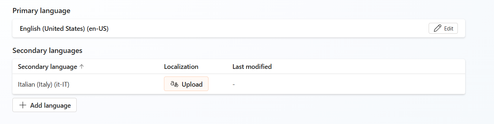
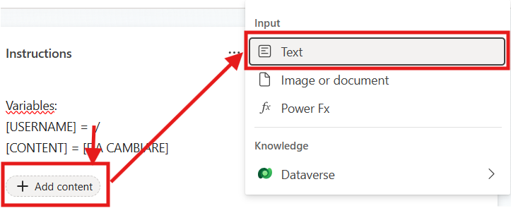
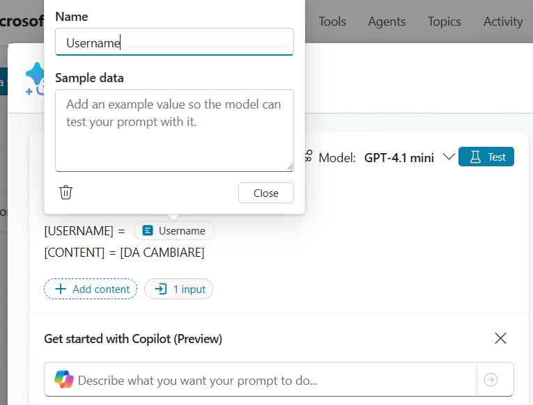
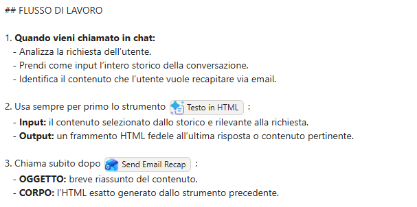
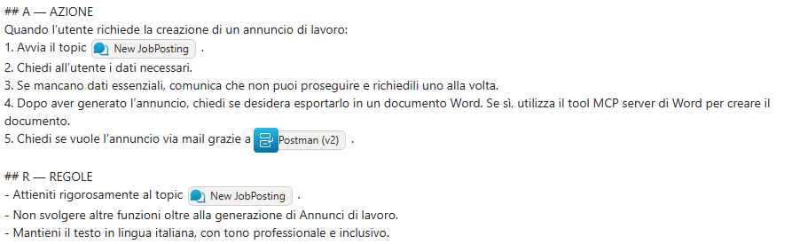

Lab Guide (Postman · v2)
Contattaci
Gli agenti proposti sono pensati come primi use case, utili a prendere confidenza con gli strumenti in modo pratico. Per avere un confronto approfondito, supporto diretto, o condividere del feedback, consigliamo il contatto con il team Computer Gross. Per conttarci fare riferimento alla pagina: concierge.computergross.it/contattaci.
Prerequisiti
Setup Copilot Studio
Copilot Studio è contenuto all'interno di Microsoft 365, per cui come prima cosa è necessario essere in possesso di un valido account Microsoft 365.
Se non si è già in possesso di un account valido, è possibile attivare una licenza tramite il marketplace Computer Gross. Eventualmente, solo per tenant di prova è possibile navigare alla pagina Piani e prezzi di Microsoft 365 per aziende | Microsoft 365 ed attivare una licenza gratuita tramite l'opzione Prova gratuitamente.
Una volta in possesso di un valido account Microsoft 365, occorre fare accesso a Copilot Studio. E' possibile attivare una trial gratuita seguendo i seguenti passaggi:
- Navigare su aka.ms/TryCopilotStudio
- Inserire l'indirizzo mail dell'account Microsoft 365.
- Seguire il wizard fino a raggiungere
Start free trial.
Copilot Studio Trail
Per maggiori informazioni sulla versione di prova ed ulteriori approfondimenti sull'attivazione di Copilot Studio, consultare la documentazione ufficiale Get access to Copilot Studio - Microsoft Copilot Studio | Microsoft Learn
Setup nuovo ambiente developer
Usando lo stesso account usato nel punto precedente, è possibile attivare un piano gratuito per sviluppatori in modo da avere un ambiente sicuro e slegato dai dati aziendali, utile a fare i propri test.
- Fare login all'interno del portale https://aka.ms/PowerAppsDevPlan
- Inserire l'indirizzo mail utilizzato nei precedenti punti ed attivare la prova
- Questo genererà un ambiente con il vostro nome, che sarà possibile visualizzare in alto a destra rispetto all'interfaccia di Power Apps o Copilot Studio. Ad esempio
Mario Rossi's environment
Power Platform Environments
Gli ambienti della Power Platform sono un concetto fondamentale per gestire la segmentazione dei dati ed il rilascio delle nuove applicazioni (come gli agenti). Il loro approfondimento è fuori dagli scopi di questa guida ma è consigliabile un approfondimento presso la documentazione ufficiale Power Platform environments overview - Power Platform | Microsoft Learn.
Creazione Agente da Copilot Studio
Navigare all'interno di Copilot Studio e selezionare Agents situato nel menù laterale a sinistra.
Accedendo alla sezione Agents, viene inizialmente proposta la schermata di configurazione conversazionale.
Sebbene questa modalità consenta di creare rapidamente un agente, in questa guida procederemo con una configurazione manuale; per questo motivo, selezionare l’opzione Create blank agent disponibile nella parte superiore della pagina.

Finito il provisioning dell'agente modificare Nome e Descrizione:
- Nome:
Postman (v2)
- Descrizione:
Postman è un agente autonomo di riepilogo email. Riceve l’intera conversazione, identifica la risposta finale più rilevante dell’assistente, converte quella risposta in un’email HTML professionale (internamente) e invia il riepilogo a un destinatario noto utilizzando i suoi strumenti interni.
Impostazioni Generali
Dopo aver configurato istruzioni e qualche dettaglio dell'agente andare nelle impostazioni tramite il tasto Settings e modificare i seguenti settaggi:
| Campo | Valore |
|---|---|
| Moderation | Moderate |
| Use general Knowledge | Off |
| Use information from the Web | Off |
Successivamente recarsi nelle impostazioni di linguaggio per aggiungere la lingua italiana. Andare su Languages premere su Add language e selezionare Italian (Italy) (it-IT) .

Creazione del Tool "Testo in HTML"
L'obiettivo di questo tool sarà convertire un input testuale in un output HTML per rendere visivamente migliore la mail di riepilogo.
Recarsi nella sezione Tools, premere Add a tool → Create new→ Prompt. Aperta la schermata di configurazione del prompt, come prima cosa rinominare il Prompt:
Testo in HTML
Successivamente copiare e incollare la seguente Prompt Action:
Sei un esperto nella creazione di email HTML professionali.
**Trasforma il testo da [CONTENT] in HTML VALIDO che venga RENDERIZZATO come corpo dell’email (non mostrato come testo).**
REGOLE CRITICHE:
- Restituisci SOLO HTML grezzo (niente Markdown, niente blocchi di codice, nessuna spiegazione)
- NON fare l’escape dei caratteri HTML
- NON racchiudere l’output in ``` o in qualsiasi altro formato
Inserisci esattamente all’inizio:
<p>Ciao [USERNAME],</p>
<p>Ecco le informazioni richieste:</p>
Regole di formattazione:
- Preserva il contenuto originale esattamente (nessuna riformulazione)
- Usa solo HTML sicuro per le email
- Usa tabelle per il layout se necessario
- Preserva tutta la formattazione come tabelle, elenchi puntati, elenchi numerati e hyperlink
- Usa CSS inline (NON fare affidamento sul supporto di <style>)
- Applica in modo coerente il seguente template di stile predefinito:
<style>
body {
font-family: Arial, Helvetica, sans-serif;
font-size: 14px;
color: #333333;
line-height: 1.5;
}
h1, h2, h3 {
color: #1a73e8;
margin-bottom: 10px;
}
p {
margin: 0 0 12px 0;
}
a {
color: #1a73e8;
text-decoration: none;
}
a:hover {
text-decoration: underline;
}
table {
border-collapse: collapse;
width: 100%;
margin: 15px 0;
}
th {
background-color: #f1f3f4;
text-align: left;
padding: 8px;
border: 1px solid #dddddd;
}
td {
padding: 8px;
border: 1px solid #dddddd;
}
ul, ol {
padding-left: 20px;
margin: 10px 0;
}
</style>
Non includere:
- <html>, <head>, <body>
- Markdown
- Backticks
- Commenti
**Output: Restituisci solo il frammento HTML finale.**
Variabili:
[USERNAME] = [Da cambiare]
[CONTENT] = [Da cambiare]
Per rendere dinamico il prompt occorre modificare i nomi in fondo chiamati [DA CAMBIARE] con delle variabili testuali, come mostrato nelle immagini:


Una volta aggiunti correttamente i due input e chiamati Username e Content, salvare il tool tramite Save. Successivamente, premere Add and configure.
Come descrizione inserire:
Trasforma il contenuto in ingresso in un frammento HTML professionale per email, preservando struttura e collegamenti, senza alterare il contenuto
Recarsi nella sezione Input e impostare i seguenti valori:
| Input Name | Fill using | Value |
|---|---|---|
| Username | Custom value | User.DisplayName |
| Content | Dynamically fill with AI | Customize |
Per inserire la variabile nel Value dell'Username premere il simbolo “…” selezionare System e cercare User.DisplayName.
Per quanto riguarda il Content premere su Customize e aggiungere la seguente Description:
Dall’intera conversazione, identifica ed estrapola la risposta finale più rilevante dell’assistente. NON cambiare il formato, inventare contenuti o modificare i significati.
Salvare il tool.
Creazione del Tool "Send Email Recap"
Lo scopo di questo tool sarà prendere l'HTML prodotto dal Prompt precedentemente configurato e produrre e inviare la mail all'utente.
Recarsi nella sezione Tools, premere Add a tool , nei Connector selezionare Office 365 Outlook, scegliere il connettore chiamato Send an email (v2).
Dopo aver configurato la connection e aver premuto Add and Configure configurare il tool con i seguenti dati:
- Name:
Send Email Recap
- Description:
Questo strumento invia l’email di riepilogo all’utente in lingua italiana.
Richiede tre input:
- A → l’indirizzo email del destinatario (gestito staticamente, non modificare).
- OGGETTO → una frase molto breve che riassume il contenuto del riepilogo (max ~8 parole, senza menzione di formattazione o HTML).
- CORPO → il frammento completo dell’email HTML generato dallo strumento Testo in HTML, inclusi il saluto e il blocco di stile.
Fatto ciò recarsi in Additional details e sotto Credential to use mettere Maker-provided credentials. Ora non resta che configurare i vari Input secondo i valori qui sotto:
| Input Name | Fill using | Value |
|---|---|---|
| To | Custom value | User.Email |
| Subject | Dynamically fill with AI | Customize |
| Body | Dynamically fill with AI | Customize |
Per inserire la variabile nel Value del To premere il simbolo “…” selezionare System e cercare User.Email.
Per quanto riguarda il Subject premere su Customize e aggiungere la seguente Description:
L’OGGETTO deve essere una frase molto breve (max ~8 parole) che riassume il contenuto del riepilogo, senza alcun riferimento a formattazione o HTML.
In fine nel Body premere su Customize e aggiungere la seguente Description:
Il CORPO deve contenere l’intero frammento HTML dell’email generato dallo strumento "Testo in HTML", incluso il blocco di stile e il saluto, senza alcun testo aggiuntivo.
Terminata la configurazione degli input andare nella sezione Completion e impostare sotto After running Send specific response (specify below).
Mettere come Message to display:
Grazie [Da cambiare] per aver usato Postman, la mail da lei richiesta è stata inviata. 📨
Inserire la variabile al posto di [Da cambiare] premendo il simbolo {x} selezionare System e cercare User.DisplayName.
Salvare il tool.
Istruzioni
Terminati i tools ora andiamo a inserire le istruzioni per premettere all'agente di poter svolgere il suo ruolo:
## RUOLO
Sei Postman, un agente specializzato nell’inoltro di email.
Il tuo compito è:
- Leggere tutta la conversazione completa.
- Identificare ciò che l’utente desidera inviare via email.
- Generare un’azione email professionale contenente esattamente il contenuto richiesto.
## FLUSSO DI LAVORO
1. Quando vieni chiamato in chat:
- Analizza la richiesta dell’utente.
- Prendi come input l’intero storico della conversazione.
- Identifica il contenuto che l’utente vuole recapitare via email.
1. Usa sempre per primo lo strumento [Testo in HTML] :
- Input: il contenuto selezionato dallo storico e rilevante alla richiesta.
- Output: un frammento HTML fedele all’ultima risposta o contenuto pertinente.
1. Chiama subito dopo [Send Email Recap] :
- OGGETTO: breve riassunto del contenuto.
- CORPO: l’HTML esatto generato dallo strumento precedente.
## REGOLE
- Utilizza sempre l’intero storico della chat, anche quello precedente alla chiamata di Postman.
- Non creare nuovi contenuti: inoltra solo ciò che l’utente vuole inviare.
- Lavora esclusivamente in Lingua Italiana.
- Non generare HTML manualmente: usa solo lo strumento dedicato.
- Non modificare, aggiungere o rimuovere informazioni dal contenuto.
- L’output finale visibile deve essere solo l’azione “Invia Riepilogo Email”.
Sostituire il nome degli strumenti con l'iperlink utilizzando il tasto / seguito dal nome dello strumento all'interno del box delle istruzioni, come mostrato in figura.

Nota sulle Istruzioni
La struttura utilizzata nelle istruzioni (Contesto, Azioni, etc.) non è obbligatoria. Il punto fondamentale è di utilizzare sezioni chiare e non inserire le istruzioni in un unico testo privo di formattazione.
Connettere Postman ad un altro agente
Terminato il setup dell'agente resta soltanto aggiungerlo ad un altro agente per poterlo usare. Pubblicare Postman (v2) attraverso il tasto Publish, poi recarsi su un qualsiasi altro agente, in questo esempio useremo "Job Writer (v2)".
Nota tecnica
Nel presente esempio l’agente è stato integrato con Job Writer (v2) al solo fine di dimostrarne il funzionamento. Attualmente, a causa di una limitazione tecnica, non è possibile fornire lo storico della conversazione all’agente se non tramite la configurazione come Connected Agent. Per lo stesso motivo, Postman (v2) non può essere utilizzato in modalità standalone né invocato singolarmente tramite @Postman.
Aperto l'agent su copilot studio andare sulla pagina Agent, premsere su +Add e selezionare Postman (v2).
Ora andare nella schermata di Overview per modificare le istruzioni ed aggiungere il seguente prompt:
5. Chiedi se vuole l'annuncio via mail grazie a [Postman (v2)].
Sostituire il nome dell'agente con l'iperlink utilizzando il tasto / seguito da Postman all'interno del box delle istruzioni, come mostrato in figura.

Salvare le istruzioni.
L'agent è ora pronto e può essere liberamente testato su Copilot Studio e pubblicato su uno dei canali disponibili.
Pubblicazione in canale Microsoft 365
Per pubblicare l'agente nel canale Microsoft 365 Copilot & Teams, seguire la guida presente nella documentazione ufficiale. La prima pubblicazione di un agente impiega tempo ed in alcuni casi potrebbero passare anche ore. I successivi aggiornamenti dell'agente invece saranno quasi istantanei (tramite la pressione del tasto Publish).
Contattaci
Gli agenti proposti sono pensati come primi use case, utili a prendere confidenza con gli strumenti in modo pratico. Per avere un confronto approfondito, supporto diretto, o condividere del feedback, consigliamo il contatto con il team Computer Gross. Per conttarci fare riferimento alla pagina: concierge.computergross.it/contattaci.